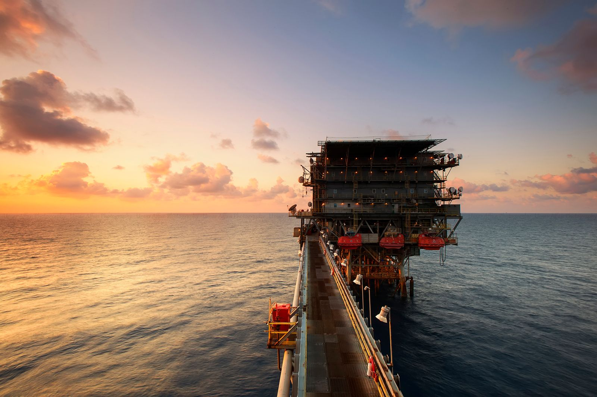

The vehicle goes down. The judgement stays on the surface.
I plan and lead ROV inspection campaigns — pipelines, hulls, cables and moorings — for offshore energy, aquaculture and infrastructure owners. The plan is written before anyone gets wet: vehicle class, current limits, deliverables and price, all on one sheet. What the camera sees is only half the job; knowing what it means, and when not to launch, is the other half.
- Seasons offshore
- 16
- Dives supervised
- 340+
- Deepest campaign
- 986 m
- Report delivery
- 10 working days

The Dive Planner
Every campaign starts as a sheet like this one. Choose the task, the depth band and the current, and the sheet works out the vehicle class, the sensor fit, the working window and exactly what you get at the end. These are working rules, not sales copy — including the line where the answer is don’t launch.
Step 1 · The task
Step 2 · Depth band
Step 3 · Current at the workface
Work-class vehicles carry manipulators and do intervention work; observation-class vehicles are eyes only — smaller, cheaper, and honest about their limits. An AUV flies a survey route untethered and is recovered with its data aboard. Which one you need is set by the task and the depth, not by what is sitting on the quay.
The plan sheet
PLAN- Vehicle & spread
- —
- Sensor fit
- —
- Working window
- —
- Deliverables
- Watch-out
- —
What a campaign day costs
Built from the rate card printed directly below — the estimator reads the same numbers. One honest warning before the arithmetic: the vessel is usually the largest line, not the robot. Anyone who quotes you the vehicle without the vessel is quoting you half a campaign.
The estimate — arithmetic shown
Indicative planning figures, ex-VAT. A firm price follows a written scope — see the engagement terms on the operator page.
Weather contingency is not a padding habit: it is the share of North Sea days on which no vehicle leaves the deck, and it belongs in the budget from day one. On standby days the spread bills at 65% of its day rate; the vessel’s standby terms are set by its charter, which is one more reason the vessel line deserves its own honest conversation.
Fees, in print
2026/27 season, ex-VAT. Report writing and data delivery are inside the spread rate — never a surprise line afterwards.
| Item | Rate | Notes |
|---|---|---|
| Observation-class spread | £6,800 / day | Vehicle, control cabin, pilot-technician + observer. Eyes only — no intervention. |
| AUV survey spread | £12,400 / day | Vehicle, launch/recovery crew, survey engineer. Route surveys and bathymetry. |
| Work-class spread | £17,500 / day | Vehicle, manipulators, tooling skid, supervisor + two pilot-technicians. |
| Heavy work-class spread | £24,900 / day | 3,000 m-rated vehicle, moonpool/A-frame launch crew, full tooling. |
| Vessel (if I arrange it) | from £24,500 / day | PSV/utility from £24,500; DSV/construction support from £68,000. Most clients charter directly — cheaper and cleaner. |
| Mobilisation | £9,500 – £34,000 | One-off, by transit distance: in-field £9,500 · regional £18,500 · extended £34,000. |
| Weather standby | 65% of spread rate | Charged only on days the vessel is on station and the weather says no. |
| Report & data delivery | Included | Full deliverable set within 10 working days of demobilisation. Expedited 5-day delivery +£1,800. |
What moves the price: depth band (vehicle class follows it), current regime (slack-only working halves your productive hours), distance offshore (mobilisation and transit days), and vessel requirement (a DP2 vessel costs what it costs — no inspection discount changes that).
Recent & standing work
Client names stay confidential in this trade; asset, scope and status do not have to. Three of these are written up in full on the campaigns page.
| Asset | Scope | Depth | Status |
|---|---|---|---|
| Product pipeline, Irish Sea 14.2 km full inspection — riser, crossings, CP survey. Case 01 → | Pipeline inspection | 86 m | Completed 2025 |
| Export cable, offshore wind Route re-survey before protection works — AUV + ROV verification. Case 02 → | Cable survey | 42 m | Completed 2026 |
| Mooring system, North Sea FPSO 12-leg mooring check, chain measurement, riser visual. Case 03 → | Mooring check | 210 m | Standing contract |
| Production platform jacket Jacket members, risers and caissons — five-yearly class survey support. | Structural inspection | 118 m | Completed 2026 |
| Harbour wall & berths Quay wall, berth pockets and scour survey for a port authority. | Hull & structure | 12 m | In planning |
What the client said — about Case 01
“Ewan front-loaded the critical spans while the weather held and had the vehicle recovered before the front arrived — the full 14.2 km, evented live, with no re-runs asked for afterwards. Our integrity team accepted the report as submitted. That has not happened with the previous two contractors.”
Got an asset that needs eyes on it?
Send the asset type, the water depth and the window you are working to. You will get a plan sheet back — vehicle, window, deliverables, price — before any commitment.